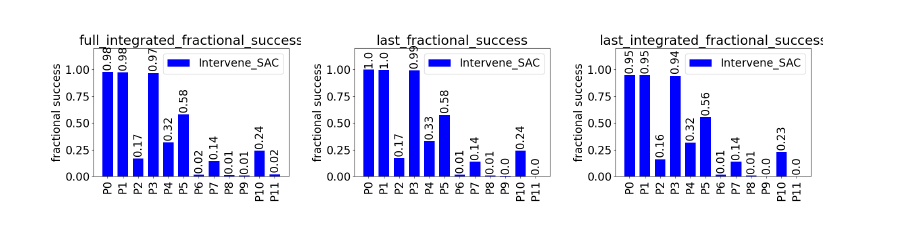
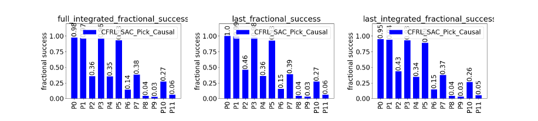
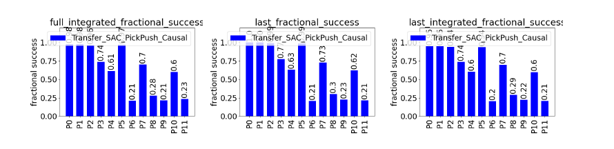

This project studied whether causal reasoning improves generalization in reinforcement learning under distribution shift. We compared a standard RL baseline, Soft Actor-Critic (SAC), against causal agents built on the CausalCF framework in the CausalWorld robotic manipulation simulator.
Agents were trained on a robotic picking task and evaluated across 12 domain-shift protocols (P0-P11) that changed object mass, pose, goal position, and friction. Performance was measured using fractional success, which quantifies overlap between the final block configuration and the goal (0 = no overlap, 1 = perfect alignment). We report three variants: full integrated (average over the entire trajectory), last (final timestep performance), and last integrated (performance weighted toward the final part of the trajectory).

The key result is that causal agents are more robust under distribution shift. Under moderate shifts, they maintain strong performance while the baseline degrades. Under harder shifts, SAC approaches near-zero success, while causal agents retain measurable performance.

We also observe transfer across tasks. A model trained only on picking achieves competitive performance on a new pushing task, indicating that learned causal structure is partially reusable.

Under extreme multi-factor shifts, all methods break down. This highlights a key limitation: causal RL improves robustness, but does not yet solve generalization in highly randomized settings.
The full report is available here.